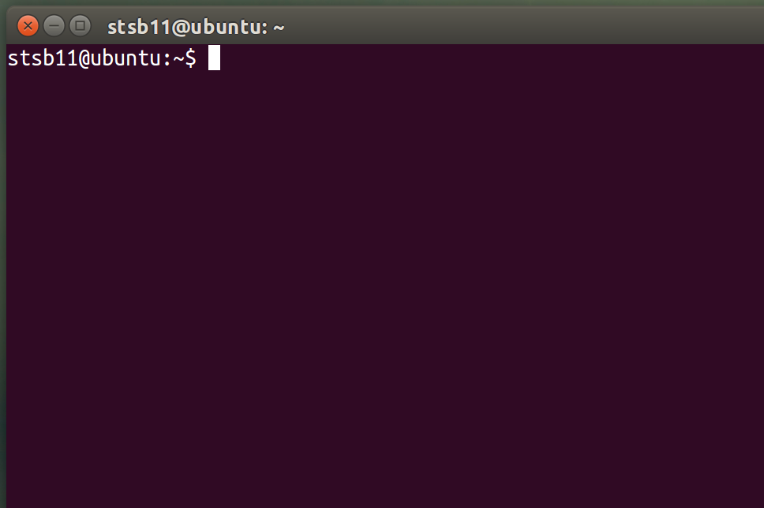

Introduction to Linux
Introduction
Try It
- NOTE: DON'T DO THESE STEPS IF YOU'RE USING THE BROWSER VERSION OF LINUX
- Double click the Ubuntu icon on your desktop, and wait for it to boot.
- Enter your normal network username and password.
- Once you are presented with a prompt, enter startx and hit enter to start a graphical session.
- You'll need to log in as yourself once more.
- Open a Terminal session by clicking the "Activities" button in the top-left corner, then typing "Terminal" and hitting enter.
- You'll have a window open that looks a little like this…

- We'll start by moving into a new directory (or folder as you might say in Windows), downloading some files from the web and then navigating through them.
- One by one, copy and paste these lines into your terminal…
cd ~/Documents mkdir Linux_Work cd Linux_Work git clone https://github.com/stsb11/9-CS-LinuxIntro-files.git cd 9-CS-LinuxIntro-files/treasureHunt
- What we've just done is…
- Change Directory into 'Documents'.
- MaKe a new DIRectory called LinuxWork.
- Change Directory into LinuxWork.
- Download some files from a website called 'GitHub.com'
- Change Directory into the directory containing these files we just downloaded.
Try It
- You can now follow the instructions back on the previous page.